리니지 라이크에
미친 AI 게임 메이커
이기훈입니다.
라인과 중립을 오가며
직접 부딪혀 쌓은 플레이 경험을
게임 제작으로 연결합니다.
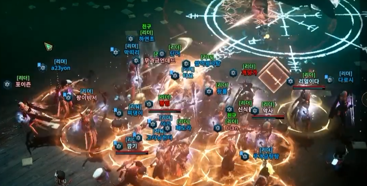
직접 부딪히며 쌓은 경험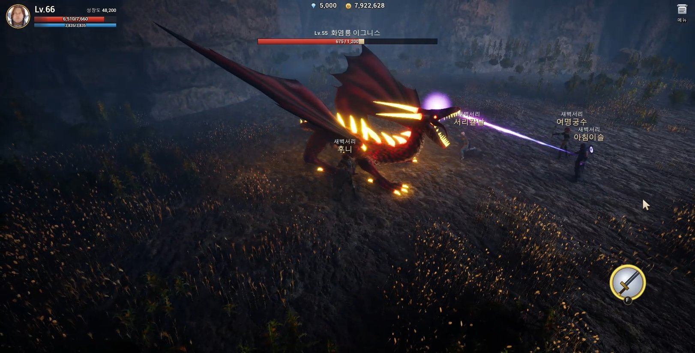
AI로 직접 만든 게임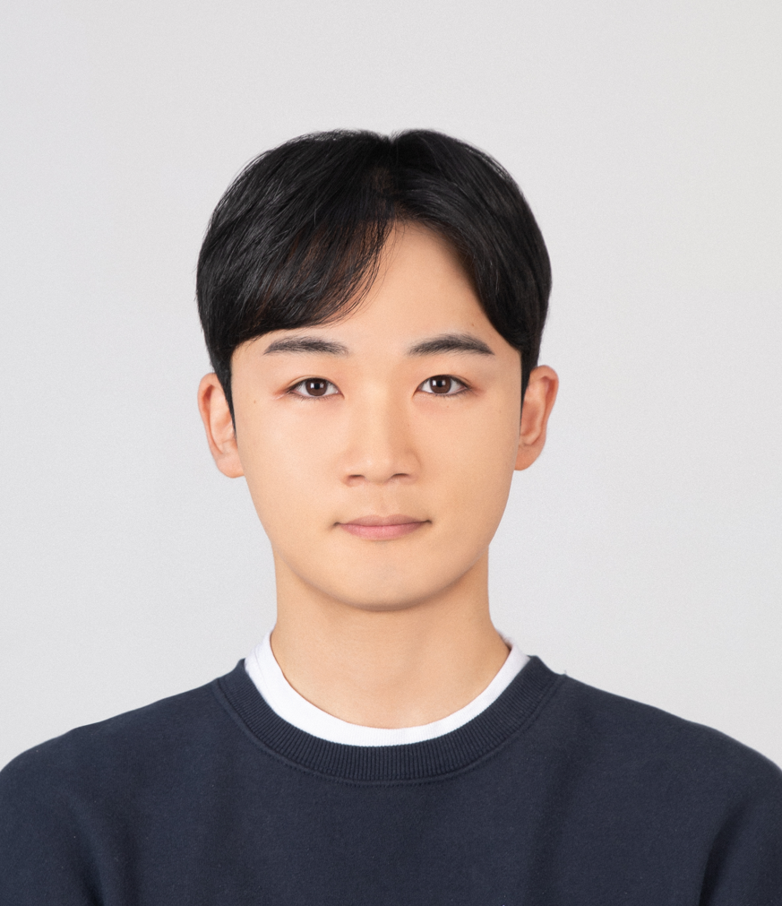
DESIGN FROM EXPERIENCE.
PROFILE / 이기훈
- Birth
- 1999.08.07
- School
- 한양대학교 ERICA · 미디어학과
- Phone
- 010-4166-6136
PLAY / 장르를 좋아하는 방식
라인과 중립, 양쪽에서 플레이했습니다.
리니지 라이크 장르를 플레이하며 라인과 중립 양쪽의 경험을 쌓아왔습니다. 길드의 위치에 따라 달라지는 경쟁과 협력을 직접 경험했습니다.
DESIGN / 경험을 게임 제작으로
플레이에서 출발해 시스템으로 구체화합니다.
플레이에서 느낀 문제를 기획서로 정리하고,
AI와 함께 실제 게임으로 만들어 확인합니다.
기획부터 구현까지, 직접 다루는 도구
- Unreal Engine 5게임 엔진
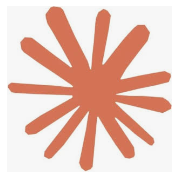
Claude바이브 코딩 · 구현- ChatGPT기획서 초안
- Tripo3D 에셋 제작
- PowerPoint기획서 작성
- Excel수치 설계 · 게임 데이터 표
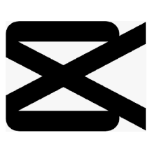
CapCut게임 시연 영상 편집
기획서에서 멈추지 않고,
직접 플레이할 수 있는 게임으로 만듭니다.
언리얼 엔진 5에서 Claude와 바이브 코딩으로 리니지 라이크 게임을 직접 만들고 있습니다. 제가 쓴 '공동 금고' 기획서를 4일 만에 실제로 동작하는 시스템으로 구현했고, 무엇을 만들지와 결과 확인은 제가 맡았습니다.
2년 넘게 라인과 중립을 오가며,
직접 부딪혀 본 리니지 라이크
2024년 7월부터 지금까지 6개 게임에서 라인 · 반왕 · 중립을 모두 경험했습니다.
2년에 걸쳐 프모 라인 3번, 일반인 라인 1번
총 4번의 라인 생활을 경험하였습니다.
로드나인 로웨인 10서버의 중립 1등 길드 ‘초식’에서 반년 동안 길드 마스터로 활동하였고 분배 관리도 직접 하였습니다.
좋아하는 게임에는,
시간도 비용도 아끼지 않았습니다.
직접 성장하고, 경쟁하고, 더 강해지고 싶었고 플레이에 대한 애정은 꾸준한 투자로도 이어졌습니다.
꾸준한 결제
라인 품위 전투력을 유지하는 등 다양한 이유로 꾸준히 패키지 상품을 사서 캐릭터에 투자를 하고 있습니다.
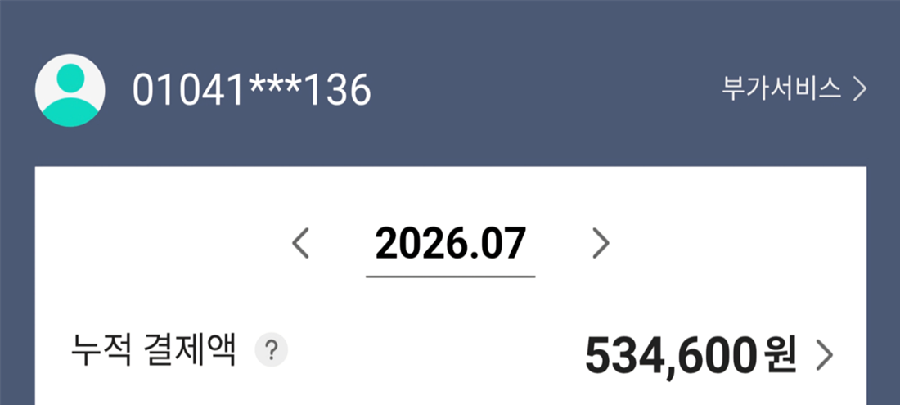
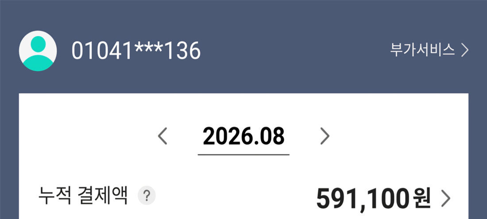
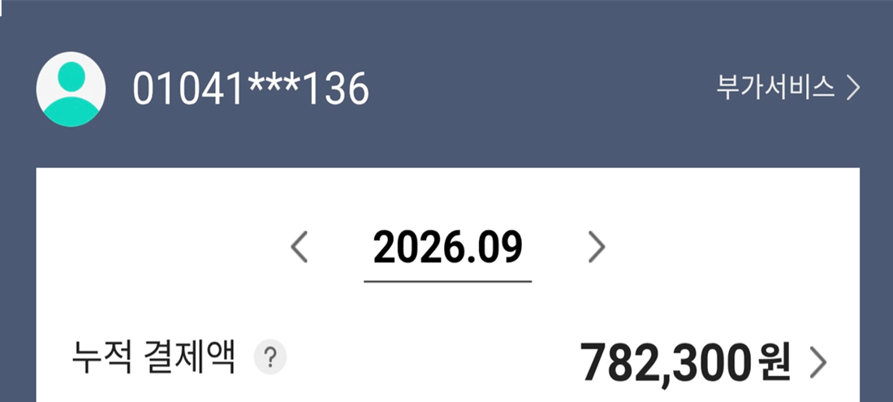
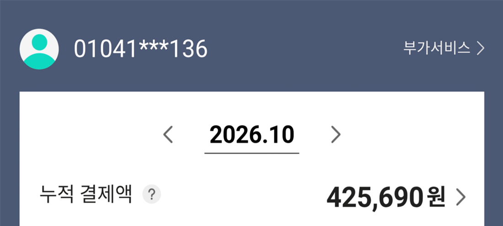
목표를 위해 모아서 구매
학생 시절, 갖고 싶은 장비와 전설 아바타를 직접 뽑기에는 부담이 커서 돈을 모아 필요한 것을 골라 구매했습니다.
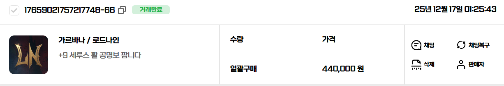
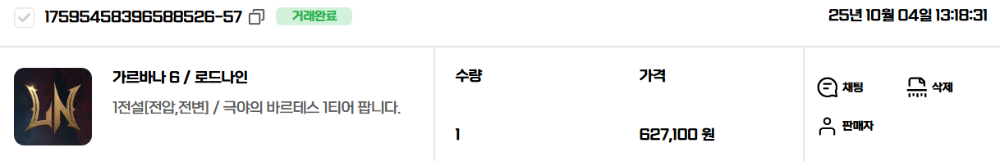
바로템 결제 기록
직접 벌고,
효율을 따져 성장했습니다.
플레이로 얻은 재화를 거래하고, 가성비 좋은 패키지를 사서 캐릭터 성장에 재투자했습니다.
재화를 꾸준히 벌기 위해서는 게임의 성장 구조와 파밍 효율, 아이템의 수요와 시세를 함께 이해해야 합니다. 직접 플레이하고 거래하며 무엇을 파밍하고 언제 거래할지 판단했고, 한정된 재화를 어디에 투자해야 효율적으로 성장할 수 있는지 고민했습니다. 이 경험을 바탕으로 이용자의 선택과 게임 경제의 흐름을 게임 만드는 시선으로 바라봅니다.
바로템 연도별 거래 기록
다른 분야에서도,
AI와 같이 기획을 하고
결과를 냈습니다.
일본인 대상 개인 채널에서 AI를 활용한 영상을 직접 기획하고 주 6편씩 제작해
3개월 만에 누적 조회수 약 3,900만 회를 달성한 경험이 있습니다.
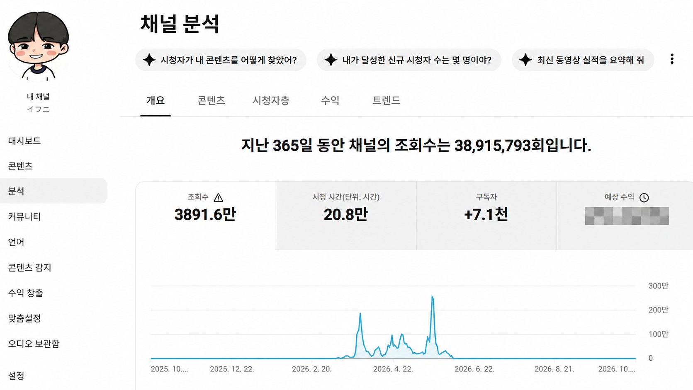
아이디어를
실제로 플레이할 수 있는 게임으로
끝까지 완성했습니다.
라인에서 실제 경험한 것을 바탕으로 AI와 함께 기획과 개발의 경계를 넘어 언리얼 엔진 5에서 동작하는 게임으로 만들었습니다. AI는 함께 일하는 동료로 대했고, 무엇을 만들지 정하고 결과를 확인하는 주도권은 제가 쥐었습니다.
단계마다 완료 기준에 따라 실행
무엇을 만들었는지보다,
왜 그렇게 만들었는지부터.
- 왜 — 연합은 여러 길드가 함께 보스를 잡는데, 게임의 분배는 길드 단위 균등 분배뿐이라 운영진이 창고 계정과 엑셀로 분배하고 있었습니다.
- 무엇을 — 여러 길드가 하나의 '공동 금고'에서 참여 기록 · 기여도 · 경매 · 분배를 게임 안에서 자동으로 처리하는 시스템을 기획하고, 실제로 플레이할 수 있게 만들었습니다.
- 어떻게 — AI와 역할을 나눠 일하고, 기획서를 9단계로 나눠 단계마다 완료 기준을 정한 뒤, 직접 플레이와 자동 테스트로 검증했습니다.
연합은 함께 싸우는데,
분배는 엑셀로 하고 있었습니다.
제가 속한 라인의 운영진과 인터뷰를 했습니다. 운영진은 전리품과 다이아를 창고 계정에 모으고, 참여와 기여도를 엑셀로 계산해 차등 분배하고 있었습니다. 이 경험을 아래 네 가지 문제로 정의했습니다.
구체화통합(여러 길드를 하나의 금고에) · 자동화(참여 기록 · 기여도 · 정산을 게임 안에서) · 선택(균등 분배 / 기여도 분배를 공동체가 선택).
기획서는 기획서 탭의 「제우스 길드 분배 시스템」.
기획서의 기능과 예외 처리를
실제로 플레이할 수 있게 만들었습니다.
다른 길드와 입찰자처럼 서버가 필요한 부분도 빼지 않고 가짜 데이터와 시뮬레이션으로 구현했습니다. 예를 들어 길드 초대는 가짜 길드 5곳으로 수락 · 거절 · 시간 만료 · 레벨 미달 · 이미 다른 금고에 등록까지 기획서의 예외를 전부 직접 확인할 수 있습니다.
- 테살리아 성의 금고 관리인 카르덴에게 공동 금고를 만들고 다른 길드를 초대합니다. (수락 · 거절 · 만료 · 조건 미달까지)
- 콘텐츠 현황판(T)에서 보스를 골라 텔레포트하면, 연합원 3명(검 · 활 · 마법)이 합류해 따라옵니다.
- 필드 보스 화염룡 이그니스를 쓰러뜨리면 참여자와 드랍이 판정되어 전리품이 공동 금고에 자동 등록됩니다.
- 운영진은 자유 경매(가짜 입찰자와 경쟁) · 지정가 · 랜덤 분배 · 거래소 판매로 전리품을 처리합니다.
- 모인 다이아를 기여도(성장도 가중치 + 보스 점수 + 콘텐츠 점수)에 따라 분배하고, 연합원은 우편으로 받습니다.
구조화 능력 · 학습 실행력 · AI 리더십을
과정으로 보여 드립니다.
문제를 먼저 정의하고,
실행 단위로 나눴습니다.
- 플레이 경험과 인터뷰를 문제 네 가지로 정의한 뒤 기획 의도를 정함
- 기획서를 구현 순서 9단계로 나누고, 단계마다 "화면에서 무엇이 보이면 완료인지"를 먼저 정함
- 게임이 커질 것에 대비해 금고 안에 섞여 있던 재화 · 우편 · 길드 · 화면 틀을 공용으로 분리
새 도구를 빠르게 익혀
바로 적용했습니다.
- 언리얼 엔진 5 · Unreal MCP · 자동 테스트 · Git을
작업하며 익혀, 4일 동안 1~9단계 구현과 구조 정리까지 마침 - 막히면 로그와 엔진 코드를 보고 원인을 찾아 방법을 바꿈 (예: 작은 버튼만 안 눌림 → 새 커서의 클릭 위치가 어긋난 것을 찾아 고침)
- Tripo로 3D 모델을 직접 만들어 봄
역할을 나누고 워크플로를 설계해,
AI를 동료처럼 이끌었습니다.
- AI가 일할 수 있는 환경: Claude와 언리얼 에디터를 MCP로 연결
- AI가 매번 읽는 작업 규칙(CLAUDE.md): 재화 중복 지급 금지, 결과 먼저 확정, 모호하면 멈추고 질문
- 밤새 대규모 정리를 맡길 때 완료 기준을 먼저 정함: "자동 테스트를 모두 통과한 단계만 저장"
정리 · 규칙 검토
구현 · 테스트 · 보고
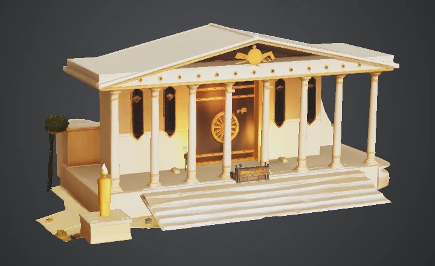
3D 에셋도 AI로 직접 만듭니다.
게임 속 신전은 Tripo AI로 3D 모델을 직접 만들어 언리얼에 배치했습니다.
AI에게 맡긴 일과
제가 직접 판단한 일을 구분했습니다.
🤖 AI에게 맡긴 일
- 기획서 아이디어 대안 · 문서 구조화 · 검토 (피닝)
- 기획서를 구현 단계로 정리 (레오)
- C++ 코드, UI 위젯, 데이터 표 작성 (훈숭이)
- 에디터 조작: 맵 배치, 에셋 적용
- 로그 분석과 원인 후보 찾기
- 자동 테스트 작성과 실행, 작업 기록
🙋 제가 직접 판단한 일
- 기획서의 방향과 정책 확정 (피닝과 기획서를 쓸 때)
- 무엇을 만들지, 어떤 순서로 나눌지
- 기획서에 없거나 애매한 규칙 결정
- 결과를 직접 플레이해서 확인하고 수정 지시
- 직접 걸어 보며 레벨 디자인 보완점 결정 (예: 계단 통과 · 떠 있는 땅)
- 확인된 단계만 저장 승인
고민한 지점과 그 선택을 한 이유
AI가 핵심 기능만 하자고 제안 → 기획서를 거의 전부 구현하기로. 기획서 전체가 실제로 동작함을 보여 주는 게 목적이라서. 서버가 필요한 부분은 가짜 데이터로.
나중에 점수를 바꾸면? → 처치한 시점의 점수로 고정, 바꾼 뒤부터의 처치에만 새 점수. 분배 직전에 점수를 고쳐 특정 길드에 유리하게 만드는 운영진 악용을 막고, 연합원이 "그때 잡은 보스는 그때 점수"로 납득할 수 있게.
콘텐츠 참여 인증번호 동시 발급 → 한 번에 하나만, 진행 중이면 남은 시간을 안내. 여러 번호가 동시에 살아 있으면 한 콘텐츠에만 참여하고 다른 번호까지 입력해 점수를 두 번 받는 악용이 가능해서. 기획서 예외 표에도 추가.
AI가 팝업으로 만든 처리 창 → 보관함 오른쪽 패널로 바로잡음. 원본 목업이 기준이라서.
공격 중 캐릭터가 미끄러짐 → 클릭 = 선택, F = 공격, 공격 중엔 이동 정지. 직접 플레이해 보고 리니지류 조작감에 맞춤.
자는 동안 AI에게 정리를 맡김 → 테스트를 통과한 단계만 저장, 확인할 수 없는 단계는 멈추기. 확인하지 못한 변경을 저장하지 않으려고.
AI의 결과를 그대로 믿지 않고,
원인을 찾아 고쳤습니다.
- 문제
- 기여도 · 분배에 영향을 주는 핵심 규칙 버그
- 원인
- 로그에 "어디서 몇 cm에서 판정됐는지" 찍어 보니, 구역 안 724cm 지점에서 엔진 이벤트가 잘못 오고 있었음
- 해결
- 엔진 이벤트에만 의존하지 않고 실제 거리로 다시 판정
- 문제
- 화면은 그대로인데 코드 안쪽을 크게 옮기는 작업. 자는 동안이라 플레이로 확인할 사람이 없음
- 방법
- 먼저 자동 테스트로 기준 결과를 남기고, "테스트를 모두 통과한 단계만 저장"을 완료 기준으로. 확인할 수 없는 단계는 AI가 스스로 멈춤
- 결과
- 0~5단계 자동 완료, 6단계는 아침에 함께. 작업 중 다른 경매에 맡긴 다이아까지 같이 빠져 쓸 수 있는 다이아가 실제보다 많아 보이는(재화 복사로 이어질 수 있는) 문제를 발견해 막음
- 문제
- 큰 버튼은 되는데 작은 버튼만 반응 없음
- 원인
- "방금 무엇을 바꿨나"부터 거꾸로 추적 → 엔진 코드를 찾아보니 새 게임 커서가 그림 가운데를 클릭 위치로 써서 15px 어긋남
- 해결
- 커서 그림을 키워 화살표 끝을 정가운데로
기획한 시스템을
하나의 게임 안에서 전부
동작하게 만들고 있습니다.
좀비 아포칼립스가 터진 서울, 아파트 옥상에서 버티며 아래(Dead Below)로 내려가 살아갈 물건을 구해 오는 쿼터뷰 생존 게임입니다. 공동 금고가 이미 있는 장르 위에 시스템 하나를 더한 작업이었다면, DeadBelow는 장르와 세계관, 핵심 재미부터 직접 정하고 여러 시스템이 서로 맞물리는 한 게임을 만드는 두 번째 도전입니다. 이번에도 구현은 AI에게 맡기고, 무엇을 만들지와 그 이유는 제가 정했습니다.
3일 만에 모두 구현
제 결정과 그 이유
문제 해결 기록
무엇을 만들었는지보다,
왜 그렇게 만들었는지부터.
- 왜 — 기획서 한 장이 아니라, 기획한 여러 시스템이 한 게임 안에서 서로 맞물려 돌아가는지를 직접 보여 주고 싶었습니다. 그래서 작은 시스템 하나가 아니라 장르부터 정하는 게임을 골랐습니다.
- 무엇을 — 옥상(쉬고 꾸미는 낙원)과 아래(파밍하는 긴장)를 오가는 서울 좀비 생존 게임. 공통 · 파밍 · 옥상 · 제작 · 좀비 · 기록 · 건축 7개 시스템이 "파밍 → 제작 → 배치 → 다시 파밍"으로 이어집니다.
- 어떻게 — 큰 방향 → 확정본(확정된 것만 + 버린 안) → 구현기획서(단계 · 완료 기준) → AI의 질문 목록에 제가 답 → 단계별 구현 → 자동 테스트와 직접 플레이로 확인 → 기록. 이 흐름을 기획서마다 반복했습니다.
좀보이드처럼 재미있되,
이 게임만의 재미가 있어야 했습니다.
좀비 생존의 기준인 좀보이드를 깊이로 따라가면 "못한 좀보이드"가 됩니다. 그래서 질문을 바꿨습니다. "어떻게 죽었나"가 아니라 "어떻게 버텼나, 누가 여기 있었나". 처음 정한 컨셉 안에 이미 있던 네 가지를 이 게임의 뼈대로 묶었습니다.
거르는 기준새 아이디어는 "아래의 긴장, 옥상의 낙원, 사람들의 흔적 중 하나를 더 진하게 하나?"로 걸렀습니다. 옥상과 옥상을 잇는 '하늘길'은 매력적이었지만, 커지면 아래로 내려갈 이유가 사라져 작게만 쓰기로 했습니다.
구현기획서 5개를
실제로 플레이할 수 있게 만들었습니다.
기획서의 기능 · UI · 예외 처리를 가능한 한 전부 넣었습니다. 아래 흐름은 순서를 강제하는 튜토리얼이 아니라, 규칙이 맞물리면 생기는 하루입니다. 좀비를 다 피하든 낮에 다 치우든 플레이어가 고릅니다.
- 첫 한 바퀴 — 옥상에서 작업대로 사다리를 만들어 내려가, 편의점 문을 열고 선반 · 계산대를 뒤진 뒤 가방(12칸)을 채워 돌아옵니다. 하루는 30분, 15시에 시작해 낮 · 노을 · 밤 조명이 바뀝니다.
- 제작과 생존 — 배고픔 · 목마름, 나무 베기, 모닥불 요리, 빗물 받이. 둘 다 바닥나면 게임 오버이고 처음부터 다시 시작합니다.
- 좀비 — 서성이다 소리를 듣고 쫓아오는 좀비(뛰는 좀비와 걷는 좀비가 섞임). 도끼로 쓰러뜨리고, 붙잡히면 연타로 뿌리칩니다.
- 옥상 낙원 — 밤이면 멀리 다른 생존자의 모닥불이 보이고, 무작위로 하나씩 꺼집니다. 밥을 주면 친해져 이름을 지어 주는 고양이.
- 사람들의 흔적 — 좀비 몸에서 나온 신분증 · 노트. 사람은 조각을 조합해 무제한으로 만들고, 성별이 좀비 겉모습과 맞게 했습니다. 옥상 게시판에 붙여 모읍니다.
- 그 뒤 더한 것 — 판을 한 장씩 깔아 짓는 건축(가리는 벽은 흐리게), 아무 바닥에나 놓는 의자 · 텐트, 의자에 앉는 동작, 라이터, 시작 화면.
서울 지도에서 출발해
레벨을 0부터 직접 설계했습니다.
빈 맵에 회색 상자로 구도를 잡는 것부터 시작해, 실제 서울 지도를 기준으로 주인공 집 · 남산타워 · 롯데타워 · 한강의 자리를 정하고 도로 → 골목 → 건물 순서로 도시를 짰습니다. 그 위에 올린 건물 · 차 · 남산타워 · 산은 Tripo로 직접 만든 3D 모델입니다.
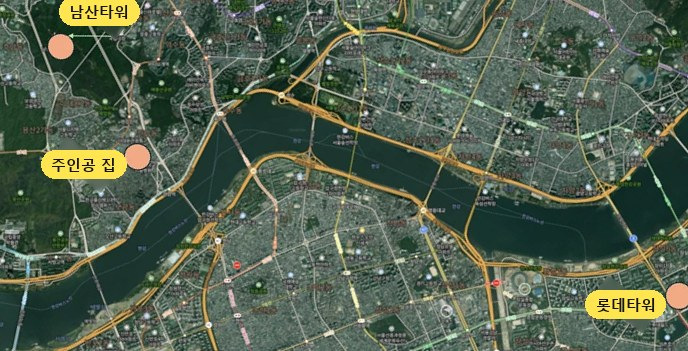
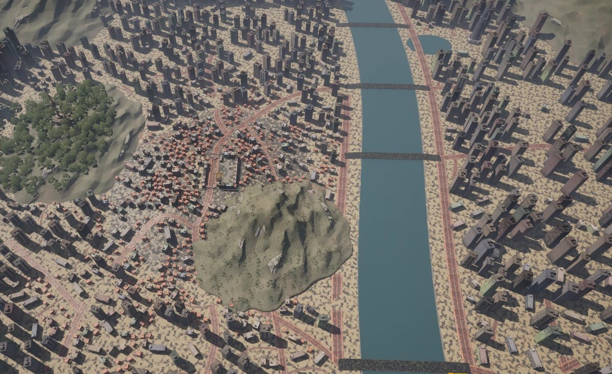
- 구도 먼저 — 모닥불에 앉으면 남산타워가 정면에 오도록, 에셋을 넣기 전에 회색 상자로 원경 구도부터 잡았습니다.
- 지도에서 자리 — 주인공 집에서 북북서에 남산타워, 동북동에 롯데타워(남산타워의 1.5배 높이), 그 사이로 한강. 옥상에서 왼쪽엔 남산타워, 오른쪽엔 초고층이 함께 보이는 서울 스카이라인입니다.
- 언덕 위 동네 — 옥상에서 도시를 내려다보는 그림이 "아래(Dead Below)로 내려간다"는 이름과 맞도록 주인공 동네를 언덕 위로. 서울엔 거대한 계단 언덕이 없어서, 옹벽 · 축대가 있는 완만한 달동네 비탈로 바꿨습니다.
- 도로부터 긋기 — 처음엔 주인공을 중심으로 건물을 고리처럼 둘러 인위적이었습니다. 실제 도시처럼 곡선 큰길 → 구불구불한 골목 → 길을 피해 흩뿌린 건물 순서로 생성 규칙을 다시 설계하고, 넣기 전에 위에서 본 그림으로 먼저 확인했습니다. (건물 약 2,250채 · 도로 조각 약 1,200개)
- 지평선 가리기 — 서울은 어느 쪽을 봐도 멀리 아파트 숲이라, 맵 끝을 고층 아파트 띠로 둘러싸고 남산 쪽만 비웠습니다.
Tripo로 직접 만든 에셋
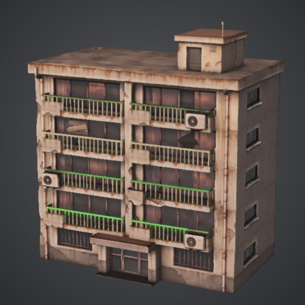
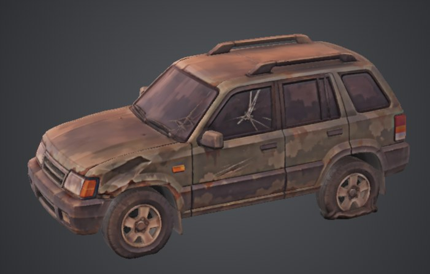
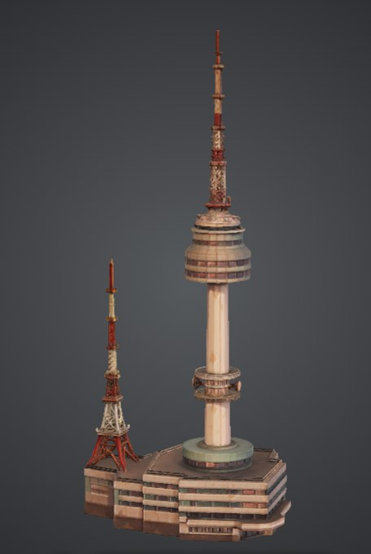
가장 오래 붙잡은 건
에셋 통일과 캐릭터 동작이었습니다.
기능은 기획서와 테스트로 확인할 수 있었지만, "자연스러운가"는 눈으로만 판단하기 어려웠습니다. 그래서 느낌을 숫자로 재는 도구를 먼저 만들고, 몇 번을 다듬어도 안 되면 방법 자체를 바꾸는 쪽으로 풀었습니다.
01에셋 통일 — 팩 · Tripo · 무료 숲이 한 그림처럼 보이게
문제도시는 에셋 팩, 이 게임만의 물건은 Tripo로 만든 모델, 나무는 무료 숲 팩. 출처가 다르니 그림체 · 색감 · 크기 · 방향이 제각각이었습니다.
- 기준부터 — 그리는 방식은 Dredge(평면 색 로우폴리 · 안개 · 어둠 속 따뜻한 불빛), 장면은 직접 만든 옥상 캠핑 레퍼런스로 정했습니다. 실사 참고 사진은 분위기만 가져오고 그림체는 스타일화로 유지했습니다.
- 색감이 다른 아파트 — Tripo에서 본 밝은 콘크리트가 게임에선 어둡고 금속처럼 보였습니다. 조명부터 만지지 않고 조명 없는 썸네일도 어두운지 먼저 나눠 보니, 가져올 때 거칠기 텍스처가 금속성 칸에 연결된 오류였습니다.
- 눈 덮인 듯 하얀 산 · 45° 돌아간 편의점 — 거칠기가 비어 기본값(반들반들)으로 번쩍였고, 모델이 자기 축에서 45° 돌아간 채 만들어져 늘리면 찌그러졌습니다. 그 뒤로 생성 AI 모델은 방향 · 기준점 · 재질 연결부터 확인합니다.
- 장난감 같은 도시 — 알록달록한 건물은 안개 속에서 장난감처럼 보여, 실제 서울처럼 바랜 비슷한 색에 그을음 · 빗물 자국 · 이끼로 차이를 냈습니다. 민트색으로 튀던 숲 팩 나무는 원본을 두고 도시용 재질로 색만 바꿨습니다.
- 캐릭터는 되돌림 — Tripo 생존자 캐릭터는 뼈 축이 맞지 않아 눕고 사라졌습니다. 원인(뼈마다의 회전 축)은 찾았지만 플레이해 보니 움직임이 어색해 되돌리고, MetaHuman으로 한국인 주인공을 새로 만들었습니다.
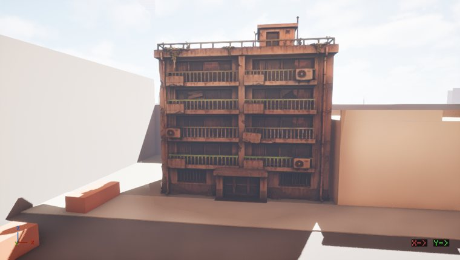
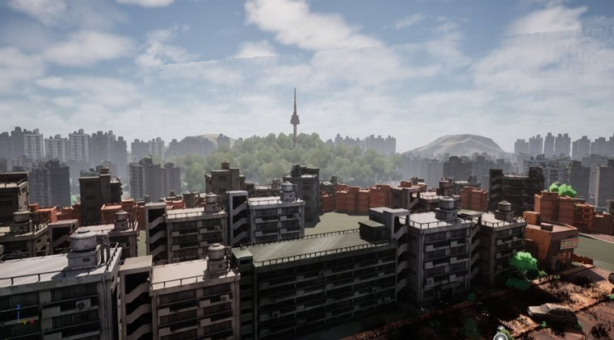
배운 점"느낌이 다르다"는 피드백을 받으면 조명 · 후처리부터 만지지 않고, 조명을 뺀 상태에서도 다른지부터 나눠 봅니다.
02사다리 — 미끄러지듯 오르던 몸을 가로대에 맞추기
문제벽에 일자로 붙은 사다리를 미끄러지듯 오르고, 손발이 가로대와 맞지 않고, 타고 내리는 순간 몸이 튀었습니다.
- 이동이 두 번 — Mixamo 오르기 동작은 스스로 위로 올라가는데 게임 코드도 캐릭터를 올려 이동이 겹쳤습니다. 한 바퀴에 오르는 높이(45.5cm)를 재서 제자리 동작으로 바꾸고, 동작 시간 = 올라간 높이 ÷ 45.5cm로 묶어 속도를 바꿔도 손발이 가로대에 맞물리게 했습니다.
- 몸이 1m 아래 — 화면은 그럴듯했지만 숫자로 재 보니 엉덩이 움직임이 맨 아래 뼈(root)에 들어가 있었고, 동작이 반대쪽을 보고 있었습니다. 장면마다 발 · 손 위치를 찍어 발이 옥상과 땅에 정확히 닿는지 확인했습니다.
- 실제 사다리처럼 — 토막을 이어 벽에 일자로 붙인 사다리를 한 개로 길게, 벽에 12° 기대게 바꾸고 타는 몸도 같이 기울였습니다. 발이 사다리를 뚫어 보여 몸을 6° 더 숙였습니다.
- 순간이동 — 아래에서 붙는 순간 몸이 88cm 튀었습니다. 프레임마다 몸 위치를 재는 로그로 원인 두 가지(앞 동작을 옮긴 자리에서 그림, 계산 순서)를 찾아 6.6cm로 줄였고, 그래도 화면이 튄다는 피드백에 영상 프레임을 비교해 이번엔 카메라가 튀는 것까지 고쳤습니다.
- 꺾인 손가락 — 주먹을 쥐게 했는데 손가락이 뒤로 꺾였습니다. 비틀리는 축이 아니라 손바닥 쪽으로 접히는 축을 계산해 가로대를 쥐게 했고, 꼭대기에서는 손이 옥상 바닥을 짚도록 했습니다.
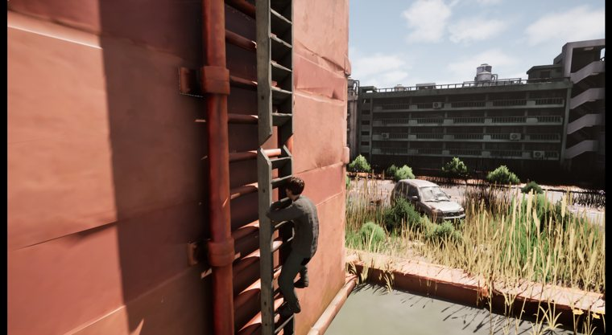
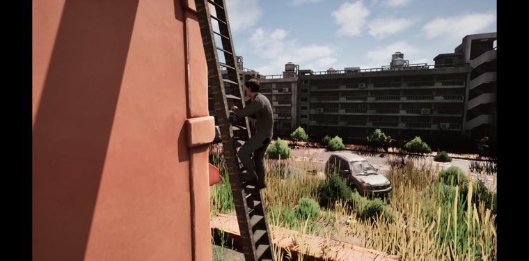
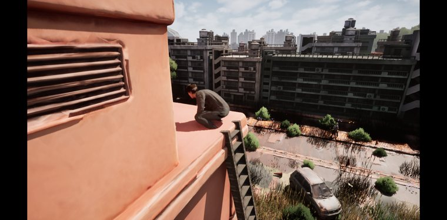
배운 점"순간이동처럼 보인다"는 눈으로 찾기 어렵습니다. 프레임마다 위치를 재서 몇 cm, 어느 방향인지 숫자로 보면 원인이 바로 드러납니다. 그리고 몸 · 카메라 중 무엇이 튀는지부터 나눠 재야 합니다.
03도끼 — 굳은 팔과 미끄러지는 다리
문제달릴 때 팔이 굳고, 휘두르면 온몸 동작이 덮여 다리가 멈춘 채 미끄러졌습니다.
- 코드로 팔 각도 다듬기 — 템플릿 원본은 고치지 않고 복제한 뒤 그 위에 허리 · 팔 뼈 회전을 얹었습니다. 숫자를 몇 번 다듬어도 사람 동작처럼 되지 않아, 다듬기를 멈추고 사람이 만든 동작을 가져오기로 했습니다.
- 다른 캐릭터의 동작 빌려 오기 — 무료 캐릭터의 공격 동작을 우리 뼈대로 옮기는(리타깃) 도구를 만들었지만, 한 손 검 동작이라 왼손을 코드로 붙여야 했고 여전히 어색했습니다.
- 무기 동작 팩 하나로 통일 — 도끼 · 방망이 · 곡괭이가 한 스타일인 생존 게임용 팩을 골랐습니다(가장 싼 만 오천 원). 1인칭용이라 "도끼 들고 걷기"가 없어서, 허리 위는 무기 동작, 다리는 원래 걷기로 뼈마다 섞었습니다. 휘둘러도 다리는 계속 걷습니다.
- MetaHuman 손에서 비틀림 — 주인공을 바꾸자 도끼가 손에서 비틀렸습니다. 숫자를 눈으로 고치기 전에 두 손의 방향을 재는 도구를 만들어, 두 뼈대의 손 뼈 방향이 원래 다르다는 것(약 P1 · Y-12 · R16°)을 찾고 자동으로 보정했습니다.
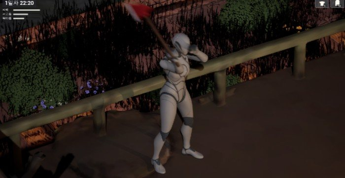
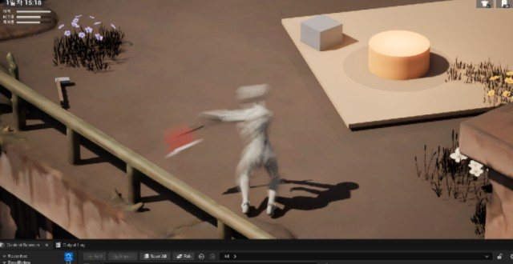
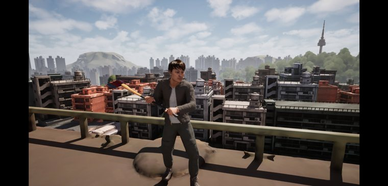
배운 점방향이 틀린 것을 다듬는 데 시간을 더 쓰지 않습니다. 몇 번 다듬어도 안 되면 방법 자체를 바꾸고, 겉모습 문제도 먼저 재는 도구를 만들면 원인이 숫자로 보입니다.
구조화 능력 · 학습 실행력 · AI 리더십을
과정으로 보여 드립니다.
게임을 시스템으로 나누고,
기획서를 단계로 나눴습니다.
- 만들기 전에 "게임 전체 것인가, 이 시스템 것인가"를 먼저 물어 7개 시스템으로 나누고, 시스템끼리는 이벤트로만 잇게 함
- 구현기획서마다 0~N단계와 단계별 완료 기준을 정함
- 대화가 길어지면 섞이는 제안을 막으려고, 구현 전에 확정본(확정된 것만 + 버린 안)을 따로 씀
- 시간 수치를 "몇 분째에 무엇을 보는지" 타임라인으로 바꿔 검증
처음 쓰는 도구를 익혀
바로 게임에 넣었습니다.
- UE 5 C++ · 자동 테스트 · Blender · Mixamo 동작 리타깃 · MetaHuman · Fab 사운드를 작업하며 익힘
- 3일 만에 구현기획서 5개를 모두 구현하고, 그 뒤로도 건축 · 시작 화면을 더함
- 코드로 다듬던 도끼 동작이 자연스러워지지 않자 멈추고, 사람이 만든 동작(Mixamo → 무기 동작 팩)으로 방법을 바꿈
AI가 일할 환경을 만들고,
역할과 규칙을 정했습니다.
- Claude를 언리얼 에디터 · Blender와 MCP로 연결해 AI가 에디터를 직접 다루게 함
- 규칙 파일에 "하면 안 되는 것 → 대신 이렇게"를 표로 적고, 매 메시지마다 핵심 규칙이 다시 들어가게 함
- 주제별로 대화를 나누고 파일(Handoff)로 이어 가며, 에디터 하나를 여러 대화가 순서대로 쓰게 '사용 중' 표시를 둠
결정할 것을 질문 목록과 추천안으로
결정사항을 같이 넘겨 빈칸 찾기
구현 · 테스트 · 기록
AI에게 맡긴 일과
제가 직접 판단한 일을 구분했습니다.
🤖 AI에게 맡긴 일
- 기획서 문서 구조화, 결정할 것을 질문 목록 · 추천안으로 정리 (기획 대화)
- 기획서 검토 — 고치지 않고 빈칸만 찾기 (외부 검토)
- C++ 코드, UI 위젯, 데이터 표, 자동 테스트 작성 (구현 대화)
- 에디터 작업 — 액터 배치, 3D 모델 · 동작 · 소리 가져오기
- 작업일지 · 결정 · 문제 해결 기록 초안
🙋 제가 직접 판단한 일
- 장르 · 핵심 재미 · 이 게임만의 아이덴티티
- 무엇을 넣고 뺄지, 좋은 아이디어도 뼈대를 약하게 하면 작게
- AI의 질문 목록에서 답 고르기 (추천과 다르게 고른 것 포함)
- 직접 플레이해서 느낌 확인 · 수정 지시 (원근 · 색감 · 동작 · 화면 구도)
- 완료 판정과 저장(커밋) 시점
고민한 지점과 그 선택을 한 이유
AI는 "최소 1개 보장"을 추천 → 빈손도 나올 수 있게. 아포칼립스에서 빈 냉장고를 여는 허탈함도 이 세계의 일부라서.
값을 따로 정했더니 한 바퀴를 마치면 이미 밤 → 하루 30분, 15시 시작으로. 이 게임의 대표 장면인 "노을 속 모닥불"을 정상 플레이로 보게 하려고.
좀보이드의 시뮬레이션 깊이를 따라가지 않고 → "어떻게 버텼나, 누가 여기 있었나". 새 축을 늘리지 않고 이미 있는 것을 진하게.
여자 좀비에게서 남자 신분증이 나오면? → 성별을 좀비 겉모습과 맞춤. 몸과 기록이 맞아야 "이 좀비도 사람이었다"가 산다.
정해진 자리에 놓기 → 아무 바닥에나 자유롭게. 정해진 자리는 '꾸미기'가 아니라 '채우기'라서.
저장 기능은 범위 밖 → "며칠 버틴 저녁 옥상"으로 바로 시작. 시작 화면 배경이 곧 그 상태라 누르는 순간 장면 속으로 들어간다.
AI의 결과를 그대로 믿지 않고,
원인을 찾아 고쳤습니다.
- 문제
- 그대로 넘기면 구현하는 AI가 여러 규칙을 임의로 정하게 될 상태
- 방법
- 쓴 대화가 아닌 다른 AI 두 곳에 "고치지 말고 검토만" 맡김. 두 곳 모두 "상황은 있는데 결과가 없다"를 짚음
- 해결
- 17개를 하나씩 직접 고름(4개는 추천과 다르게). 이후 검토 때는 결정사항을 같이 넘겨, 새 기획서가 전날 결정과 어긋난 것까지 잡아냄
- 문제
- 장비를 바꿀 때 원래 장비가 사라질 수 있는 아이템 소실 버그
- 원인
- 검토만 하는 AI에게 코드를 보게 함 → 가방이 꽉 찼고 묶음(×5)에서 1개를 장착하면 돌려놓을 자리가 없었음. 테스트가 다루지 않은 조합
- 해결
- 복사본으로 먼저 해 보고 다 성공할 때만 확정하도록. 재현 상황을 그대로 새 테스트로 남김
- 문제
- 가방(4단계)을 만든 뒤 이미 통과했던 문(3단계) 테스트가 실패
- 원인
- "가방 때문인가?"로 여기저기 고치지 않고 로그 순서부터 봄 → 밀어낸 뒤 닫히는 문짝이 사람을 다시 안으로 밀어 넣고 있었음
- 해결
- 여닫는 동안 문짝 충돌을 끄고, 다 닫힌 순간 한 번 더 검사. 매 단계 전체 테스트를 다시 돌린 덕에 잡은 숨은 버그
- 문제
- 확인할 사람이 없는 밤에 성능 · 테스트 · 정리 작업 14개를 맡김
- 방법
- "테스트 · 숫자 · 캡처로 직접 확인할 수 있는 일만", "작업마다 테스트 → 기록 → 저장", "30분 막히면 건너뛰고 아침 보고"를 먼저 정함. 보고 판단해야 하는 변경은 하지 않음
- 결과
- 14개 중 13개 완료(1개는 일부만), 가끔만 실패하던 테스트를 20번 연속 통과로, 아침에 확인할 것은 따로 목록으로 받음
떨어진 바위 뒤에 숨어
화염을 피하는
보스 전투를 만들고 있습니다.
화산 지하 동굴의 보스 "심연의 감시자"입니다. 벽의 굴에서 튀어나온 뱀용이 공격하기 전에 바닥에 범위를 보여 주고, 체력이 절반 아래로 내려가면 굴을 빠져나와 날아다닙니다. 공동 금고가 기획서를 그대로 구현한 작업이었다면, 보스 전투는 기획서 없이 직접 플레이하며 판단을 쌓아 간 프로토타입입니다. 구현은 AI에게 맡기고, 무엇이 어색한지와 어떻게 바꿀지는 제가 플레이하며 정했습니다.
굴에서 나오는 뱀용
화염 한 번에 깎이는 체력
Blender로 만든 보스 동작
문제 해결 기록
무엇을 만들었는지보다,
왜 그렇게 만들었는지부터.
- 왜 — 리니지 라이크와 다른 MMORPG의 보스처럼, 공격 전에 바닥에 범위가 보이고 그 범위를 보고 피하는 전투를 직접 만들어 보고 싶었습니다. 이 보스를 잡으면 전리품이 공동 금고에 등록되어 두 시스템이 이어집니다.
- 무엇을 — 벽의 굴에서 튀어나오는 뱀용, 공격마다 먼저 차오르는 범위 표시, 체력 절반 아래에서 시작되는 비행, 그리고 이 전투의 핵심인 "보스가 떨어뜨린 바위 뒤에 숨어 화염을 피한다".
- 어떻게 — 기획서 대신 플레이를 기준으로 삼았습니다. 요청 → AI 구현 → 직접 플레이 → 어색한 곳을 짚음 → AI가 로그로 원인 확인 → 수정 → 기록. 이 한 바퀴를 하루에도 여러 번 돌렸습니다.
패턴을 더하기 전에,
한 줄로 말할 수 있는 재미부터 정했습니다.
패턴을 하나씩 붙여 가던 중에 이런 피드백을 받았습니다. "특출나게 재미있다거나 연출 · 비주얼이 좋다거나 그러진 않고, 딱 프로토 플레이뿐이네요." 맞는 말이었습니다. 패턴은 많은데 이 전투가 무엇을 하는 전투인지 한 줄로 설명되지 않았습니다. 그래서 주 목적을 정했습니다. 보스가 떨어뜨린 낙석으로 화염을 피한다.
그런데 AI에게 코드를 확인시켜 보니, 정작 그 놀이가 게임 안에 없었습니다.
거르는 기준이제 패턴을 더하거나 고칠 때는 "낙석 뒤에 숨어 화염을 피한다에 도움이 되는가"를 먼저 봅니다. 패턴을 더 붙이는 것으로는 처음 받은 피드백이 바뀌지 않는다고 판단했습니다.
굴에서 나오는 보스부터
날아다니는 2페이즈까지 플레이할 수 있습니다.
모든 공격에는 한 가지 규칙이 있습니다. 바닥에 보여 준 범위가 곧 맞는 범위입니다. 범위가 다 차오르면 표시는 사라지고, 그 순간 범위 안에 있으면 맞습니다.
- 등장 — 화산 동굴 남쪽 벽으로 다가가면 뱀용이 굴에서 튀어나와 몸을 세우고 포효합니다. 걷거나 쫓아오지 않고, 굴 앞에서 좌우로만 돌며 공격합니다.
- 굴 앞의 패턴 — 내리꽂기(원), 휩쓸기(부채꼴), 화염 브레스(긴 부채꼴), 대지 폭발(보스 둘레의 원), 낙석(여러 개의 원), 굴로 들어가 원뿔 모양으로 크게 뿜는 불.
- 2페이즈 비행 — 체력이 절반 아래로 내려가면 몸이 붉게 변하고, 굴을 빠져나와 전투장 위를 정해진 길로 납니다. 공격할 때만 플레이어 쪽으로 갔다가 다시 돌아갑니다.
- 날면서 하는 공격 — 플레이어가 서 있던 자리를 지나는 직선으로 불을 뿜고 지나가기, 플레이어 자리를 몸으로 둘러싼 뒤 안쪽으로 조이기. 둘 중 무엇이 나올지는 랜덤입니다.
- 낙석과 360도 브레스 — 조이는 순간 둘레에 바위가 떨어지고, 내려앉은 보스가 불줄기를 한 바퀴 돌립니다. 맞으면 최대 체력의 50%, 바위 뒤에 있으면 맞지 않습니다. 내려앉아 있는 동안은 근접으로 때릴 수 있는 틈이기도 합니다.
- 소리와 처치 — 울음 · 불 · 낙석 소리는 무료 효과음에서 직접 골랐고, 바닥을 치는 소리와 범위가 차오르는 소리는 AI가 합성해 넣었습니다. 처치하면 전리품이 공동 금고에 등록됩니다.
아직 없는 것기획서, 처치 후 "참여 보상" 알림, 2페이즈 전환 연출은 아직 만들지 않았습니다. 지금은 플레이로 판단을 쌓아 가는 프로토타입 단계입니다.
가장 오래 붙잡은 건
"AI 느낌 없이 자연스럽게"였습니다.
보스를 네 번 바꿨고, 날아다니게 만드는 방법도 한 번 통째로 바꿨습니다. 바꿀 때마다 바꾸면 무엇을 잃는지 먼저 보고 골랐습니다.
01보스를 벽의 굴로 옮기기 — 하루 쓴 모델을 버린 결정
문제땅속에서 솟는 탑 모양 뱀을 만들어 넣었는데, 벽의 작은 굴에서 나타나는 쪽이 더 자연스러워 보였습니다.
- 잃는 것부터 — AI에게 "벽에서 나타나는 게 더 자연스럽겠지?"라고 묻자, 보기에는 그렇다면서 바꾸면 잃는 것을 표로 보여 줬습니다. 제가 설계한 360도 브레스를 못 쓰고, 옆으로 긴 몸 · 굴 입구 · 동작 8개를 새로 만들어야 한다는 것. 지금 자리에 구멍만 더하는 대안도 함께였습니다.
- 그래도 벽 — 알고 골랐습니다. ChatGPT에 줄 그림 요청을 다시 쓰고(수평 일직선, 뒤쪽은 평평한 단면), Tripo로 모델을 만들어 하루 만에 굴에서 나오는 보스까지 넣었습니다.
- 움직임은 계산으로 — 뼈를 하나씩 돌리지 않고, 머리가 갈 길을 정하면 몸통 마디가 그 길을 뒤따르게 해 동작 8개를 만들었습니다.
배운 점방향을 바꾸기 전에 "바꾸면 무엇을 잃는지"를 먼저 보면, 버리는 작업이 생겨도 알고 고른 것이 됩니다. 꺼 두었던 360도 브레스는 나중에 보스가 내려앉는 자리에서 다시 살렸습니다.
02날아다니는 뱀용 — 만든 방식을 통째로 바꾸기
문제"체력이 절반 아래가 되면 굴에서 나와 날아다니게, AI 느낌 없이 자연스럽게"가 목표였는데, 모델은 굴에 숨기려고 뒤쪽을 평평하게 잘라 둔 상태였습니다.
- 가능한 범위부터 — AI는 "정해진 길을 나는 비행은 자연스럽게 되고, 플레이어를 쫓는 자유 비행은 어색해지기 쉽다"고 나눠 답했고, 걸림돌(꼬리 없음 · 근접 클래스 · 천장 높이)을 먼저 알렸습니다. 안 되면 되돌리기로 하고 그 시점을 저장해 둔 뒤 시작했습니다.
- 꼬리 — 몸통 뒤쪽 조각을 뒤로 반복해 붙이되 굵기와 길이를 같이 줄여, 비늘이 늘어나지 않고 같이 작아지게 했습니다.
- 길을 동작에 넣기 — 처음에는 나는 길을 동작 안에 구워 넣고, 미리보기 영상으로 먼저 확인했습니다.
- 다시 만들기 — 영상을 보고 "자리가 고정이면 반복 플레이 느낌이 난다, 공격할 때는 플레이어 쪽으로 가야 한다"고 판단했습니다. 구운 길로는 불가능해서, 몸의 움직임을 게임 안에서 실시간으로 계산하는 방식으로 바꿨습니다. 한 시간 전에 만든 동작 8개는 버렸지만 계산법은 그대로 옮겼습니다.
- 첫 플레이에서 보스가 사라짐 — 로그에는 비행이 순서대로 찍혀 있었고 제 공격도 맞고 있었습니다. '없는 것'이 아니라 '있는데 안 보이는 것'으로 좁혀 보니, 뼈대에 들어 있던 배율 100을 빼먹어 몸이 1/100로 줄어 있었습니다.
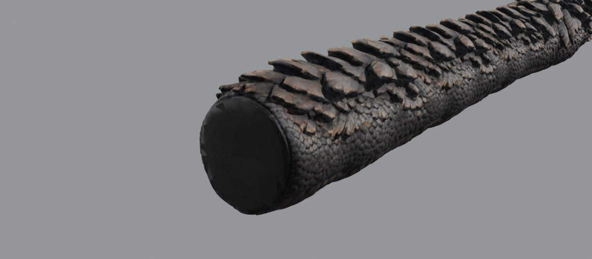
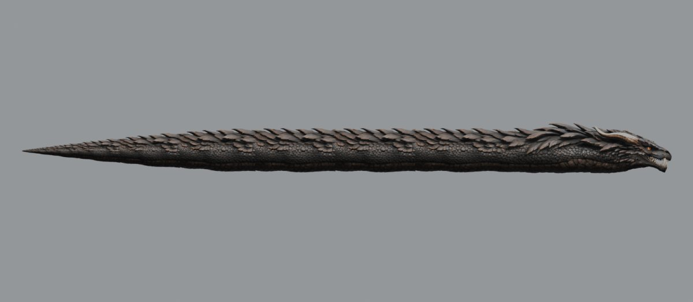
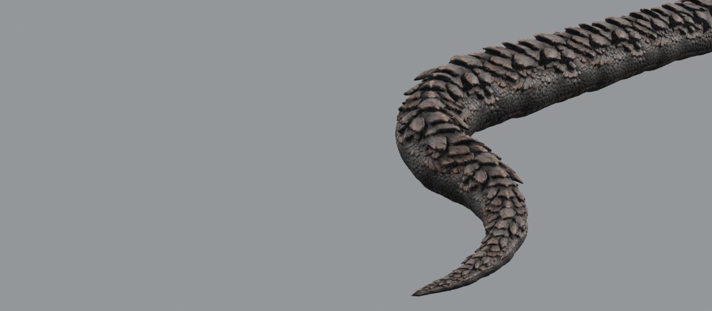
배운 점먼저 만든 것이 아까워서 방향을 지키지 않습니다. 원하는 플레이가 그 방식으로 안 되면 방식을 바꾸고, 다만 검증한 계산법처럼 살릴 수 있는 것은 그대로 옮깁니다.
구조화 능력 · 학습 실행력 · AI 리더십을
과정으로 보여 드립니다.
전투를 규칙 하나와
한 줄의 목적으로 묶었습니다.
- 모든 공격을 "보여 준 범위 = 맞는 범위" 한 규칙으로 통일
- 패턴이 늘어 흐려지자 주 목적 한 줄을 정하고, 그 기준으로 패턴을 거름
- "안 보인다"를 '없다'와 '있는데 안 보인다'로 나눠 원인을 좁힘
- 이 보스만의 기능은 전용 코드로 분리하고, 다른 보스와 같이 쓰는 코드에는 연결 고리만 남김
처음 해 보는 일을
바로 게임에 넣었습니다.
- 그림(ChatGPT) → 3D 모델(Tripo) → 뼈대와 동작(Blender) → 언리얼까지 한 흐름으로 익힘
- 벽의 굴 보스로 바꾸기로 한 뒤 하루 만에 모델 · 동작 · 굴 입구를 넣음
- 프로젝트에 쓸 소리가 없자 무료 효과음을 찾아 고르고, 없는 소리는 합성해 넣음
AI에게 답보다
판단할 재료를 먼저 받았습니다.
- 방향을 바꾸기 전에 "잃는 것"과 대안을 표로 받고 그중에서 고름
- 어려운 요청은 "되는 범위"와 걸림돌부터 나눠 듣고, 되돌릴 지점을 저장한 뒤 시작
- 주제별로 대화를 나누고 파일(Handoff)로 이어 가며, 에디터 하나를 여러 대화가 순서대로 쓰게 '사용 중' 표시를 둠
네 방향 그림으로
뼈대 · 동작 · 코드 · 소리 · 기록
AI에게 맡긴 일과
제가 직접 판단한 일을 구분했습니다.
🤖 AI에게 맡긴 일
- 모델 손보기 — 몸통 늘리기, 꼬리 붙이기, 뼈대 넣기
- 보스 동작과 날아다니는 몸의 계산
- C++ 코드 — 공격 패턴, 범위 표시, 비행, 낙석
- 로그를 읽어 원인 찾기
- 바닥 치는 소리 · 범위 소리 합성, 영상에서 소리 뽑기
- 작업일지 · 결정 · 문제 해결 기록 초안
🙋 제가 직접 판단한 일
- 이 전투의 주 목적과 화염 피해(체력의 50%)
- 보스를 걷지 않게, 벽의 굴에서 나오게
- 범위의 색 · 차오르는 속도 · 모양
- 직접 플레이해 어색한 곳 짚기 (끼임 · 벽에 뜨는 범위 · 뚫고 나가는 불)
- 보스에 어울리는 소리 고르기
- 더할 것과 멈출 것 — 패턴을 더 붙이지 않기로 한 것 포함
고민한 지점과 그 선택을 한 이유
쫓아오는 보스는 캐릭터와 겹쳐 떨렸음 → 불상처럼 가만히 있고 범위로 공격. 움직임을 하나씩 고치는 대신 전투 방식을 바꿔 한 번에 없앰.
AI가 "360도 브레스를 못 쓰게 된다"고 알렸지만 → 벽의 굴. 몸 끝이 굴에 숨어 긴 몸이 더 있는 것처럼 보이는 쪽을 고름.
원 여러 개와 위로 솟는 불기둥 → 뿜고 지나가는 길을 빨갛게. 용이 일직선으로 뿜는 공격이라 길이 보여야 한다고 봄.
정해진 자리 → 그 순간 플레이어가 있는 자리. 고정이면 반복 플레이 느낌이 나서.
앉아서 아무것도 안 함 → 꺼 두었던 360도 브레스를 여기서. 벽에 붙어 못 쓰던 패턴이 한 바퀴 돌 수 있는 자리를 얻음.
체력의 13% → 최대 체력의 50%. 안 숨어도 버틸 수 있으면 바위가 놀이가 되지 않아서.
AI의 결과를 그대로 믿지 않고,
플레이로 확인하고 원인을 찾았습니다.
- 문제
- 날아다니게 만든 뒤 첫 플레이에서, 2페이즈가 되자 보스가 화면에서 사라짐
- 원인
- 고치기 전에 로그부터 봄 → 비행은 순서대로 진행됐고 제 공격도 맞고 있었음. 뼈대에 든 배율 100을 빼먹어 몸이 1/100로 줄어 있었음
- 해결
- 배율을 곱하게 고치면서 다음 플레이 로그에 그 배율이 찍히게 함. 다시 플레이해 보스가 보이는 것과 추정이 맞았다는 것을 함께 확인
- 문제
- 전사로 다가가면 몸이 겹치기만 하고 공격이 안 들어감. 궁수로는 잘 맞음
- 원인
- 로그에 공격 키를 누른 뒤 7초 동안 공격 기록이 한 줄도 없었음. 자동으로 만든 충돌 모양이 눈에 보이는 몸과 달라 "닿았다"고 판정하지 못함
- 해결
- 거리를 충돌 모양이 아니라 보스의 뼈를 따라 재도록 바꾸고, 몸이 플레이어를 막지 않게 함
- 문제
- 휩쓸기 범위가 바닥이 아니라 벽에 길게 빛남. 굴 바위에는 이상한 범위가 하나 더 뜸
- 원인
- 처음엔 벽과 높은 곳을 칠하지 않게 해 증상만 가림. 그래도 바닥에 범위가 없어 다시 찾아보니, 굴 입구 덮개 바위 꼭대기(약 9m)를 땅으로 잡고 있었음
- 해결
- 범위를 받지 않는 물체는 땅으로 보지 않게 고침. 증상이 사라진 뒤에도 "원래 보여야 할 것이 보이는지"까지 확인해야 한다는 것을 배움
- 문제
- 보스와 캐릭터가 계속 겹치고 보스가 떨면서 이상하게 행동함
- 원인
- 로그를 보니 공격할 때마다 다시 쫓아와 겹쳤고, 근접 사거리가 짧아 물기 · 할퀴기가 한 번도 나오지 않고 있었음
- 해결
- 움직임을 하나씩 고치지 않고 "가만히 있고 범위로 공격"하는 보스로 전투 방식을 바꿈. 모델도 그에 맞게 새로 만듦
리니지 라이크 플레이 경험 타임라인
막대를 누르면 자세한 활동을 볼 수 있습니다.
리니지라이크 외 플레이한 게임들
활동
주 6편의 영상으로,
3개월 만에 약 3,900만 조회수
개인 채널을 개설해 일본인 시청자를 대상으로 AI를 활용하여 영상들을 직접 기획하여 주 6편 제작했습니다. 채널 운영 3개월 만에 누적 조회수 약 3,900만 회를 달성했습니다.
유기견을 돌보는
정기 봉사 활동
유기견 봉사 연합 동아리 애니멀메이트에서 정기적으로 보호소를 방문했습니다. 배변으로 더러워진 케이지를 청소하고, 먹이를 주고 산책을 돕는 등 유기견을 돌보는 활동에 참여했습니다.
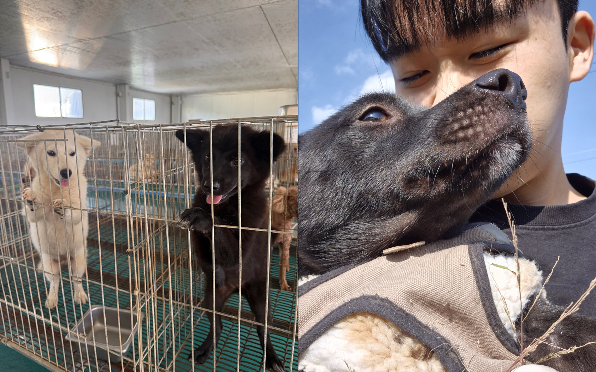
학생들의 편의를 위한
앱 기능 기획 및 실현
교내 앱 제작 프로젝트에 참여해 학생들의 편의를 위한 기능 기획을 담당했습니다.
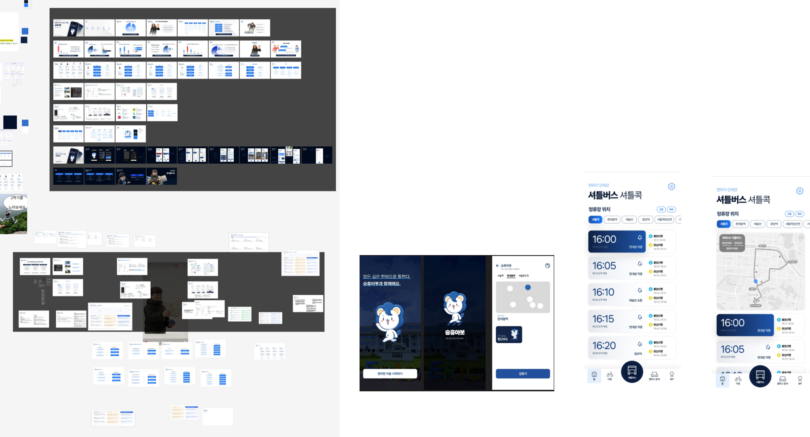
자살 예방 캠페인,
기획부터 발표까지
캡스톤 디자인 프로젝트에서 자살 예방 캠페인의 기획을 담당했습니다. 캠페인의 메시지와 구성을 기획하고, 최종 발표까지 마무리했습니다.
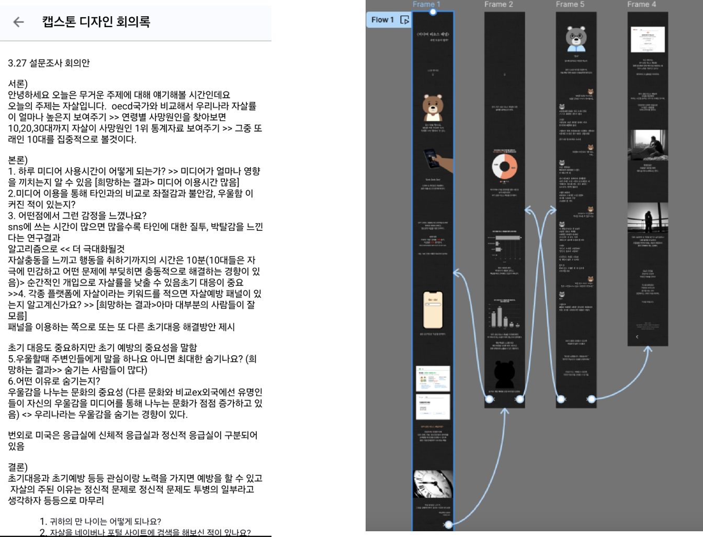
기획서
직접 작성한 창작 시스템 기획서와 시스템 분석서입니다. 기획서 카드를 누르면 PDF가 새 탭에서 열립니다.
리니지라이크 현상금 시스템
현상금 시스템을 주제로 작성한 창작 기획서입니다.
PDF 기획서 열기 ↗제우스 길드 분배 시스템
길드 분배 시스템을 주제로 작성한 창작 기획서입니다.
PDF 기획서 열기 ↗로드나인 연금술 시스템 분석서
로드나인은 왜 '연금술'을 도입했는가를 분석한 시스템 분석서입니다.
PDF 분석서 열기 ↗AI 기획 팀을 직접 설계하고,
결정은 제가 했습니다.
ChatGPT를 역할별로 나눈 4개의 AI 기획 팀을 만들고, 완성한 기획서를 Claude에 전달해 실제 게임으로 제작했습니다.
- AI에 맡긴 일
- 아이디어 대안과 장단점, 문서 구조화, 화면 설계, 전체 검토
- 제가 정한 일
- 기획 방향, 정책 확정, 단계별 승인
실제 지침 중“사용자와 논의하지 않은 수치나 정책을 임의로 확정하지 않는다.”
- A브레인스토밍아이디어 대안 · 장단점 비교
- B기획서 작성입력 조건 · 처리 과정 · 결과로 구조화
- CUI/UX 설계화면 설계 · 이미지
- D기획서 검토전체 피드백
- →Claude에 전달기획서를 실제 게임으로 제작
연락처
연락 정보를 추가할 수 있어요
이메일이나 링크는 실제로 공개할 정보를 정한 뒤 입력합니다.